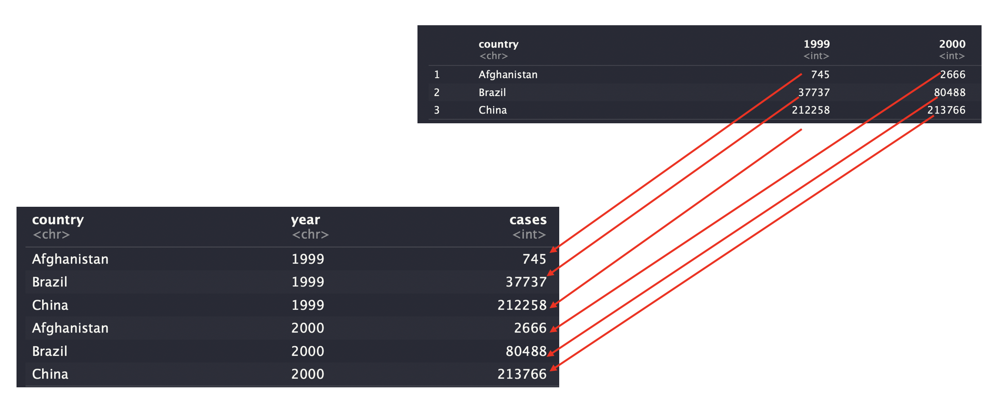

Chapter 8 Data Transpormation 2
8.1 tidy 데이터
tidy 데이터란 각각의 변수가 열이고, 각각의 관측치가 행이 되도록 배열된 데이터 셋트를 말합니다. tidy 데이터의 특징은 아래와 같습니다.
- 변수마다 해당되는 열이 있어야 한다.
- 관측값마다 해당되는 행이 있어야 한다.
- 값마다 해당하는 하나의 셀이 있어야 한다.

Tidy 데이터가 대부분 아닐까요? 실제 프로젝트에 들어가면 대부분 Tidy 하지 않은 데이터가 굉징히 많습니다.
- 기존 데이터는 Tidy한 데이터에 익숙 하지 않는 사람들이 만든 데이터가 많음.
- 데이터를 만든 목적은 여러 가지일수 있으며, 특정 어플리케이션 이나 처리 방식에 데이터 구조가 얽메여 있는 경우
아래 테이블 중에 tidy 한 데이터 셋을 찾아 보세요 각 데이터셋은 country(국가), year(연도), population(인구) 및 cases(사례), 네 개의 변수 값을 동일하게 보여주지만 다른 방식으로 구성한다.
## ── Attaching packages ─────────────────────────────────────── tidyverse 1.3.0 ──## ✓ ggplot2 3.3.2 ✓ purrr 0.3.4
## ✓ tibble 3.0.4 ✓ dplyr 1.0.2
## ✓ tidyr 1.1.2 ✓ stringr 1.4.0
## ✓ readr 1.4.0 ✓ forcats 0.5.0## Warning: package 'ggplot2' was built under R version 4.0.2## Warning: package 'tibble' was built under R version 4.0.2## Warning: package 'tidyr' was built under R version 4.0.2## Warning: package 'readr' was built under R version 4.0.2## Warning: package 'dplyr' was built under R version 4.0.2## ── Conflicts ────────────────────────────────────────── tidyverse_conflicts() ──
## x dplyr::filter() masks stats::filter()
## x dplyr::lag() masks stats::lag()## # A tibble: 6 x 4
## country year cases population
## <chr> <int> <int> <int>
## 1 Afghanistan 1999 745 19987071
## 2 Afghanistan 2000 2666 20595360
## 3 Brazil 1999 37737 172006362
## 4 Brazil 2000 80488 174504898
## 5 China 1999 212258 1272915272
## 6 China 2000 213766 1280428583## # A tibble: 12 x 4
## country year type count
## <chr> <int> <chr> <int>
## 1 Afghanistan 1999 cases 745
## 2 Afghanistan 1999 population 19987071
## 3 Afghanistan 2000 cases 2666
## 4 Afghanistan 2000 population 20595360
## 5 Brazil 1999 cases 37737
## 6 Brazil 1999 population 172006362
## 7 Brazil 2000 cases 80488
## 8 Brazil 2000 population 174504898
## 9 China 1999 cases 212258
## 10 China 1999 population 1272915272
## 11 China 2000 cases 213766
## 12 China 2000 population 1280428583## # A tibble: 6 x 3
## country year rate
## * <chr> <int> <chr>
## 1 Afghanistan 1999 745/19987071
## 2 Afghanistan 2000 2666/20595360
## 3 Brazil 1999 37737/172006362
## 4 Brazil 2000 80488/174504898
## 5 China 1999 212258/1272915272
## 6 China 2000 213766/1280428583## # A tibble: 3 x 3
## country `1999` `2000`
## * <chr> <int> <int>
## 1 Afghanistan 745 2666
## 2 Brazil 37737 80488
## 3 China 212258 213766## # A tibble: 3 x 3
## country `1999` `2000`
## * <chr> <int> <int>
## 1 Afghanistan 19987071 20595360
## 2 Brazil 172006362 174504898
## 3 China 1272915272 12804285838.2 gather 로 데이터 모으기
- gather 함수 정의 : 열 이름이 변수 이름이 아니라 변수 값인 경우에 사용
gather(
data,
key = "key",
value = "value",
...,
na.rm = FALSE,
convert = FALSE,
factor_key = FALSE
)- table4a 데이터셋을 보면 열명이 변수명으로 되어 있습니다.
- 변수로된 열을 수정해서 tidy 데이터 셋으로 만들어 봅니다.
## # A tibble: 3 x 3
## country `1999` `2000`
## * <chr> <int> <int>
## 1 Afghanistan 745 2666
## 2 Brazil 37737 80488
## 3 China 212258 213766- 해당 작업을 하기 위해서는 3가지가 필요합니다.
- 열집합 : 값을 나타내는 열 집합 (1999,2000)
- key : 값으로 변환할 변수의 이름을 새로 만들어 지정 (year)
- value : 값에 대한 변수 이름을 새로 만들어 지정 (cases)

- Pipeline 을 사용하지 않고 tidy 하게 만들기
## # A tibble: 6 x 3
## country year cases
## <chr> <chr> <int>
## 1 Afghanistan 1999 745
## 2 Brazil 1999 37737
## 3 China 1999 212258
## 4 Afghanistan 2000 2666
## 5 Brazil 2000 80488
## 6 China 2000 213766- Pipe를 사용하여 tidy하게 만들기
## # A tibble: 6 x 3
## country year cases
## <chr> <chr> <int>
## 1 Afghanistan 1999 745
## 2 Brazil 1999 37737
## 3 China 1999 212258
## 4 Afghanistan 2000 2666
## 5 Brazil 2000 80488
## 6 China 2000 213766- table4b에 대해서도 동일한 작업을 반복 합니다.
## # A tibble: 6 x 3
## country year population
## <chr> <chr> <int>
## 1 Afghanistan 1999 19987071
## 2 Brazil 1999 172006362
## 3 China 1999 1272915272
## 4 Afghanistan 2000 20595360
## 5 Brazil 2000 174504898
## 6 China 2000 1280428583table4a 및 table4b 를 tidy 데이터셋으로 변환하고
table4a 와 table4b 의 타이디하게 된 버전을 하나의 티블로 결합하기 위해서
tidy4a <- table4a %>%
gather(`1999`, `2000`, key = "year", value = "cases")
tidy4b <- table4b %>%
gather(`1999`, `2000`, key = "year", value = "population")
left_join(tidy4a, tidy4b, by=c("country", "year"))## # A tibble: 6 x 4
## country year cases population
## <chr> <chr> <int> <int>
## 1 Afghanistan 1999 745 19987071
## 2 Brazil 1999 37737 172006362
## 3 China 1999 212258 1272915272
## 4 Afghanistan 2000 2666 20595360
## 5 Brazil 2000 80488 174504898
## 6 China 2000 213766 1280428583- 조인 조건을 주지 않을 경우
## Joining, by = c("country", "year")## # A tibble: 6 x 4
## country year cases population
## <chr> <chr> <int> <int>
## 1 Afghanistan 1999 745 19987071
## 2 Brazil 1999 37737 172006362
## 3 China 1999 212258 1272915272
## 4 Afghanistan 2000 2666 20595360
## 5 Brazil 2000 80488 174504898
## 6 China 2000 213766 12804285838.3 spread 로 데이터 펼치기
gather 함수의 반대라고 보면 됨. 관측값이 여러 행에 흩어져 있을 때 사용 table2 를 한번 확인해 봅시다. 각 관측값이 두 행에 흩어져 있습니다.
## # A tibble: 12 x 4
## country year type count
## <chr> <int> <chr> <int>
## 1 Afghanistan 1999 cases 745
## 2 Afghanistan 1999 population 19987071
## 3 Afghanistan 2000 cases 2666
## 4 Afghanistan 2000 population 20595360
## 5 Brazil 1999 cases 37737
## 6 Brazil 1999 population 172006362
## 7 Brazil 2000 cases 80488
## 8 Brazil 2000 population 174504898
## 9 China 1999 cases 212258
## 10 China 1999 population 1272915272
## 11 China 2000 cases 213766
## 12 China 2000 population 1280428583## # A tibble: 6 x 4
## country year cases population
## <chr> <int> <int> <int>
## 1 Afghanistan 1999 745 19987071
## 2 Afghanistan 2000 2666 20595360
## 3 Brazil 1999 37737 172006362
## 4 Brazil 2000 80488 174504898
## 5 China 1999 212258 1272915272
## 6 China 2000 213766 12804285838.3.1 gather 와 spread 가 조금 다른 이유
stocks <- tibble(
year = c(2015, 2015, 2016, 2016),
half = c( 1, 2, 1, 2),
return = c(1.88, 0.59, 0.92, 0.17)
)
stocks %>%
spread(year, return) %>%
gather("year", "return", `2015`:`2016`)## # A tibble: 4 x 3
## half year return
## <dbl> <chr> <dbl>
## 1 1 2015 1.88
## 2 2 2015 0.59
## 3 1 2016 0.92
## 4 2 2016 0.178.4 Seperate와 Unite
table3 에는 다른 문제가 있다. 두 개의 변수(cases 및 population )가 포함된 한 개의 열(rate )이 있다. 이 문제를 해결하려면 separate() 함수가 필요하다. 또한 하나의 변수가 여러 열에 분산되어 있는 경우에 사용하는, separate() 의 보완 함수인 unite() 에 대해서도 학습한다.
8.4.1 seperate 로 나누기
- 구분 문자가 나타나는 곳마다 쪼개서 하나의 열을 여러 열로 분리
## # A tibble: 6 x 3
## country year rate
## * <chr> <int> <chr>
## 1 Afghanistan 1999 745/19987071
## 2 Afghanistan 2000 2666/20595360
## 3 Brazil 1999 37737/172006362
## 4 Brazil 2000 80488/174504898
## 5 China 1999 212258/1272915272
## 6 China 2000 213766/1280428583- rate 열은 cases 와 population 변수를 모두 포함하므로 두 변수로 쪼개야함.
## # A tibble: 6 x 4
## country year cases population
## <chr> <int> <chr> <chr>
## 1 Afghanistan 1999 745 19987071
## 2 Afghanistan 2000 2666 20595360
## 3 Brazil 1999 37737 172006362
## 4 Brazil 2000 80488 174504898
## 5 China 1999 212258 1272915272
## 6 China 2000 213766 1280428583## # A tibble: 6 x 4
## country year cases population
## <chr> <int> <chr> <chr>
## 1 Afghanistan 1999 745 19987071
## 2 Afghanistan 2000 2666 20595360
## 3 Brazil 1999 37737 172006362
## 4 Brazil 2000 80488 174504898
## 5 China 1999 212258 1272915272
## 6 China 2000 213766 1280428583# 문자 자동 쪼개기 햇으며, 결과는 숫자로 자동 변환됨
table3 %>%
separate(rate, into = c("cases", "population"), convert = TRUE)## # A tibble: 6 x 4
## country year cases population
## <chr> <int> <int> <int>
## 1 Afghanistan 1999 745 19987071
## 2 Afghanistan 2000 2666 20595360
## 3 Brazil 1999 37737 172006362
## 4 Brazil 2000 80488 174504898
## 5 China 1999 212258 1272915272
## 6 China 2000 213766 1280428583## # A tibble: 6 x 4
## country century year rate
## <chr> <chr> <chr> <chr>
## 1 Afghanistan 19 99 745/19987071
## 2 Afghanistan 20 00 2666/20595360
## 3 Brazil 19 99 37737/172006362
## 4 Brazil 20 00 80488/174504898
## 5 China 19 99 212258/1272915272
## 6 China 20 00 213766/1280428583## # A tibble: 6 x 4
## country century year rate
## <chr> <chr> <chr> <chr>
## 1 Afghanistan 199 9 745/19987071
## 2 Afghanistan 200 0 2666/20595360
## 3 Brazil 199 9 37737/172006362
## 4 Brazil 200 0 80488/174504898
## 5 China 199 9 212258/1272915272
## 6 China 200 0 213766/1280428583- seperate 기본 속성
- 숫자나 글자가 아닌 문자를 (예를 들어 ‘/’, ‘#’, ‘$’ 등) 볼때 자동으로 쪼갬
- conver=TRUE 를 주지 않으면 기본적으로 원래 데이터 타입을 유지
8.4.2 unite 로 합치기
- unite() 는 separate() 의 반대이다. 여러 열을 하나의 열로 결합
## # A tibble: 6 x 4
## country century year rate
## * <chr> <chr> <chr> <chr>
## 1 Afghanistan 19 99 745/19987071
## 2 Afghanistan 20 00 2666/20595360
## 3 Brazil 19 99 37737/172006362
## 4 Brazil 20 00 80488/174504898
## 5 China 19 99 212258/1272915272
## 6 China 20 00 213766/1280428583# century 와 year 를 합쳐서 new 변수를 만듭니다.
# 구분자를 주지 않았을 경우 기본 구분자는 "_" 입니다.
table5 %>%
unite(new, century, year)## # A tibble: 6 x 3
## country new rate
## <chr> <chr> <chr>
## 1 Afghanistan 19_99 745/19987071
## 2 Afghanistan 20_00 2666/20595360
## 3 Brazil 19_99 37737/172006362
## 4 Brazil 20_00 80488/174504898
## 5 China 19_99 212258/1272915272
## 6 China 20_00 213766/1280428583## # A tibble: 6 x 3
## country new rate
## <chr> <chr> <chr>
## 1 Afghanistan 1999 745/19987071
## 2 Afghanistan 2000 2666/20595360
## 3 Brazil 1999 37737/172006362
## 4 Brazil 2000 80488/174504898
## 5 China 1999 212258/1272915272
## 6 China 2000 213766/12804285838.4.2.1 extra 및 fill 인수의 역할
- 특정 관측값에 일반적인 패턴보다 1개 더 많은 값이 있는 경우
## # A tibble: 3 x 1
## x
## <chr>
## 1 a,b,c
## 2 d,e,f,g
## 3 h,i,j# seperate 할때 관측값이 넘칠 경우 버림이 기본 동작
tibble(x = c("a,b,c", "d,e,f,g", "h,i,j")) %>%
separate(x, c("one", "two", "three"))## Warning: Expected 3 pieces. Additional pieces discarded in 1 rows [2].## # A tibble: 3 x 3
## one two three
## <chr> <chr> <chr>
## 1 a b c
## 2 d e f
## 3 h i j# seperate 할때 관측값이 넘칠 경우 버림
tibble(x = c("a,b,c", "d,e,f,g", "h,i,j")) %>%
separate(x, c("one", "two", "three"), extra = "drop")## # A tibble: 3 x 3
## one two three
## <chr> <chr> <chr>
## 1 a b c
## 2 d e f
## 3 h i j# seperate 할때 관측값이 넘칠 경우 하나의 값으로 합침
tibble(x = c("a,b,c", "d,e,f,g", "h,i,j")) %>%
separate(x, c("one", "two", "three"), extra = "merge")## # A tibble: 3 x 3
## one two three
## <chr> <chr> <chr>
## 1 a b c
## 2 d e f,g
## 3 h i j- 특정 관측값에 일반적인 패턴보다 1개 적은 값이 있는 경우
## # A tibble: 3 x 1
## x
## <chr>
## 1 a,b,c
## 2 d,e
## 3 f,g,i# seperate 할때 관측값이 모자랄 경우 기본 동작은 오른쪽 비움
tibble(x = c("a,b,c", "d,e", "f,g,i")) %>%
separate(x, c("one", "two", "three"))## Warning: Expected 3 pieces. Missing pieces filled with `NA` in 1 rows [2].## # A tibble: 3 x 3
## one two three
## <chr> <chr> <chr>
## 1 a b c
## 2 d e <NA>
## 3 f g i# seperate 할때 관측값이 모자랄 경우 NA를 오른쪽 비움
tibble(x = c("a,b,c", "d,e", "f,g,i")) %>%
separate(x, c("one", "two", "three"), fill = "right")## # A tibble: 3 x 3
## one two three
## <chr> <chr> <chr>
## 1 a b c
## 2 d e <NA>
## 3 f g i# seperate 할때 관측값이 모자랄 경우 NA를 왼쪽 비움
tibble(x = c("a,b,c", "d,e", "f,g,i")) %>%
separate(x, c("one", "two", "three"), fill = "left")## # A tibble: 3 x 3
## one two three
## <chr> <chr> <chr>
## 1 a b c
## 2 <NA> d e
## 3 f g i- 관측값이 부족한 필드와 넘치는 필드가 같이 존재 할때 extra 와 fill 을 함께 사용해보자
#넘치는 것은 merge 하고, 모자란 것은 오른쪽에 NA로 채워라
tibble(x = c("a,b,c", "d,e,f,g", "h,i")) %>%
separate(x, c("one", "two", "three"), extra = "merge", fill ="right")## # A tibble: 3 x 3
## one two three
## <chr> <chr> <chr>
## 1 a b c
## 2 d e f,g
## 3 h i <NA>8.5 NA(결측값) 처리하기
8.5.1 결측 처리 기본
- 명시적 결측 : 실제 데이터가 NA로 표시 된것
- 암묵적 결측 : 전체 적인 데이터 흐름상 결측인 것
- 명시적 결측 과 암묵적 결측 을 찾아 보세요
sales_revenue <- tibble(
year = c(2018, 2018, 2018, 2018, 2019, 2019, 2019),
qtr = c( 1, 2, 3, 4, 2, 3, 4),
revenue = c(300, 550, 600, NA, 700, 850, 400)
)
sales_revenue## # A tibble: 7 x 3
## year qtr revenue
## <dbl> <dbl> <dbl>
## 1 2018 1 300
## 2 2018 2 550
## 3 2018 3 600
## 4 2018 4 NA
## 5 2019 2 700
## 6 2019 3 850
## 7 2019 4 400- 연도를 열로 넣어서 암묵적 결측값을 명시적으로 만들기
## # A tibble: 4 x 3
## qtr `2018` `2019`
## <dbl> <dbl> <dbl>
## 1 1 300 NA
## 2 2 550 700
## 3 3 600 850
## 4 4 NA 400#명시적 결측지는 중요하지 않을 수 있으므로 na.rm=TRUE 사용해서 암묵적 결측치로 전환 가능
sales_revenue %>%
spread(year, revenue) %>%
gather(year, revenue, '2018':'2019', na.rm = TRUE)## # A tibble: 6 x 3
## qtr year revenue
## <dbl> <chr> <dbl>
## 1 1 2018 300
## 2 2 2018 550
## 3 3 2018 600
## 4 2 2019 700
## 5 3 2019 850
## 6 4 2019 4008.5.2 NA(결측) 처리 자동화
- 결측값을 명시적으로 자동 표현 해주는 complete() 함수
- complete() 는 열 집합을 분석해 NA 존재 가능성이 있는 다양한 패턴을 찾고, NA를 채웁니다.
## # A tibble: 8 x 3
## year qtr revenue
## <dbl> <dbl> <dbl>
## 1 2018 1 300
## 2 2018 2 550
## 3 2018 3 600
## 4 2018 4 NA
## 5 2019 1 NA
## 6 2019 2 700
## 7 2019 3 850
## 8 2019 4 400- complete 를 호출해서 NA 처리를 하고 NA 인곳을 fill 함수로 자동 채움
- fill 함수는 NA를 만나면 가장 최근 비결측 값으로 채웁니다. (아래 결과에서는 600 으로 모두 채움)
## # A tibble: 8 x 3
## year qtr revenue
## <dbl> <dbl> <dbl>
## 1 2018 1 300
## 2 2018 2 550
## 3 2018 3 600
## 4 2018 4 600
## 5 2019 1 600
## 6 2019 2 700
## 7 2019 3 850
## 8 2019 4 400